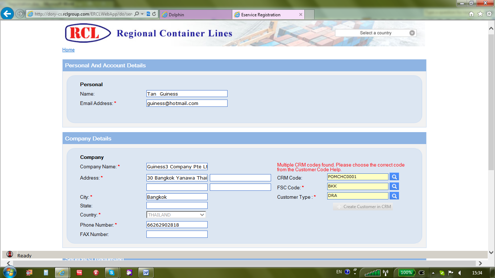

User can access to RCL Web Site via http://www.rclgroup.com and click on hyperlink named as Register Now for RCL BhumNet registration.
用户?以通过http://www.rclgroup.com访问RCL网站，点击超链接的注册??为现在的RCL BhumNet注册。

After clicking on Register Now, system will pop up a window containing various sections for registration. In Personal And Account Details, user can insert personal name, Email Address and proposed user ID with corresponding password. Once done, user needs to click onto Hyperlink named as Check Availability to ensure no duplicate user ID in the existing user profile. Once done, a word = Available in green will be displayed.
登记册上?击立?完??，系统会弹出一个包??个部分登记的窗?。在个人?账户信?，用户?以将个人姓??，电?邮件地?，并建议用户ID与对应的密?。一旦完?，用户需?点击超链接上命??为检查?用性，以确?没有??的用户ID在现有的用户?置文件。一旦这样?，一个字=有绿色将被显示。
In Company Details section, user needs to input all company information especially, those mandatory fields indicated with *. For Phone and Fax number, country and area codes are vital for future communication.
在公?详细信?部分，用户需?输入的所有公?的信?尤其是那些必填字段标有*。对于电?和传真??，国家代?和区?是至关??的未?的通信。
In Service(s) Requested section, user can selectively tick the check box for Web Booking with eShipping Instruction or only Web Booking without eShipping. eShipping without Web Booking is not available for user. Once selected, user can proceed to read Terms of Use and Privacy Policy for this Web Site and tick onto check box if accepted. For security reason, user has to type the words in CAPCHA and then click onto Submit button.
在?务（S）请求的部分，用户?以有选择地勾选用于Web的预订与无电?托?电?托?指令或仅网上预订的?选框。电?托?无网络预订?适用于用户。一旦选定，用户?以继续阅读的使用?款和??政策本网站并勾选上?选框，如果接?。出于安全原因，用户必须键入CAPCHA的?，然?左键?击??交按钮。

In case any incorrect word(s) entered into CAPCHA, system will prompt error message at left bottom corner as Characters Not Matched in red colour and all data input previously will be erased by the system for re-selection.
在任何情况下?正确的字（次）签订CAPCHA，系统会??示错误信?在左下角的字符?匹?的红色和所有的数?输入之?将被系统?新选择删除。
After submitted successfully, system will pop-up a window showing registration forward to RCL for review. User needs to click on Ok button to go back to previous Web Site screen.
??交?功?，系统会弹出显示?登记窗?RCL审查。用户需?点击确定按钮返回到?一个网站的?幕。
In RCL Network, approver will be notified with auto-email alert immediately via RCL E-Notice applications.
在RCL网络，审批将被自动电?邮件警报立?通过RCL电?公告申请通知
Also, user who has submitted the registration request will be received notification via email address input in Personal Details.
此外，用户???交的注册申请将?过电?邮件地?输入个人资料收到通知。
RCL Approver can proceed to perform review using menu tree RCL eService > Registration Review in Dolphin Carrier System.
RCL审批者?以继续使用??树RCL电??务>注册回顾系Dolphin Carrier统进行检讨。
After clicking onto Registration Review, system will display a window containing request by Country, City, Company Name, Customer Name, and Requested Date. Approver needs to click onto hyperlink under Customer Name to retrieve the details in Registration.
点击到注册审查?，系统会显示包?按国家，城市，公???称，客户??称，并?求日期?求的窗?。审批人需?点击到下客户??称的超链接?检索注册的详细信?。
In Company Details, if no existing customer code (CRM Code) detected, approver can proceed to select responsible FSC with corresponding Customer Type using Help (Look Up) button. Manual input are not acceptable to avoid incorrect data value. Once done, approver can then create new customer code by clicking onto button named as +Create Customer in CRM.
在公?详细信?，如果没有现?的客户代?（客户关系管?代?）检测，审批者?以继续选择负责FSC使用说明（查找）按钮，相应的客户类型。手动输入是?能接?的，以???正确的数?值。一旦完?，审批者?以通过点击按钮上命??为?创造新的客户代?+ CRM中创建客户
In case of multiple customer codes exist in the system, system will display 1st record in the list with corresponding FSC code and Customer Type. Approver need to check with location person in charge of customer creation for appropriate selection via Help (Look Up) button.
如果有多个客户代?存在于系统中，系统会显示一记录列表中的相应FSC代?和客户类型。审批人需?通过帮助（查找）按钮，检查与?置有关负责人的客户创造适当的选择。

In Look Up window, user can input value in Find and select corresponding field name in Column for Searching purpose. To minimize the search, user needs to tick the Check Box name as Wild Card and select field name in Sort by with appropriate Order By to facilitate selection.
在查找窗?，在查找用户?以输入值和列中选择相应的字段??的?索目的。为了尽??少?索，用户需?勾选核?方???称作为外?，并选择字段??排?与适当的排?，方便选择。
Once new customer code created or existing customer selected, approver can then click onto Submit button as approved.
一旦新客户代?创建的或现有的客户选择的，审批者?以??击到??交按钮的批准。
Upon approval, The registration request will be erased from Customer’s Registration Requested screen.
?批准?，该注册请求将从客户的注册?求?幕擦除。
After approved, customer will be notified by auto-email using email address from personal details.
批准?，客户将?以通过自动电?邮件使用电?邮件地?的个人资料通知。

Created with the Personal Edition of HelpNDoc: Easily create HTML Help documents